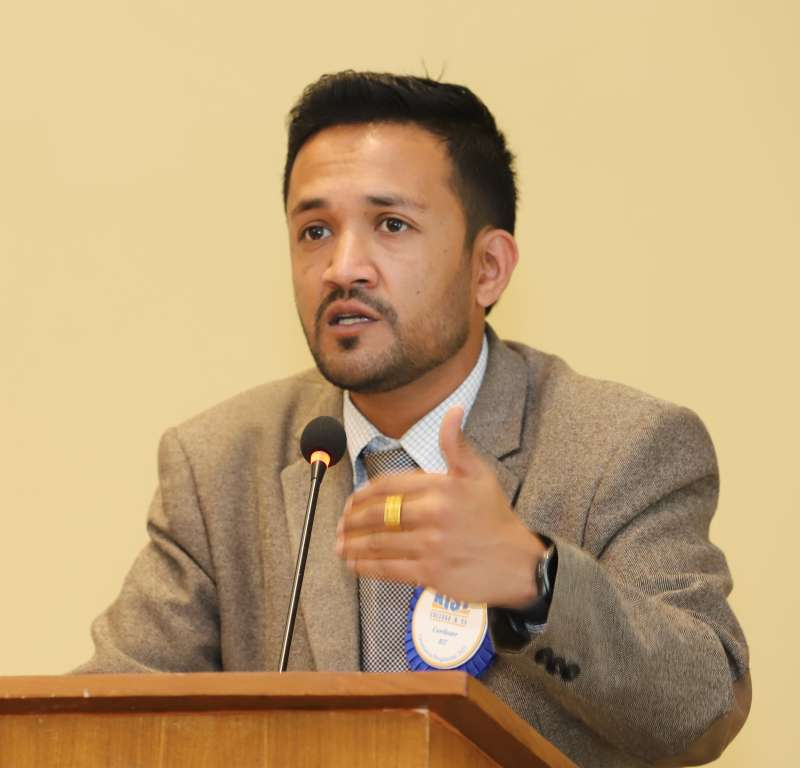

Message
Message from the Co - ordinator

Dear Students,
Welcome to Bachelor of Information Technology at KIST!
BIT empowers its students with IT skills that help moulding them into skillful IT professionals. We are dedicated to providing our graduates with top quality education emphasizing a practical approach to teaching-learning. Our proficient lecturers working in a disciplined yet friendly environment focus on both the regular course and extra courses. Fine guest lectures keep our students updated with advancements in IT.
Students have abundant resources, such as network labs with multimedia or an e-library, to help them study and explore their fields. Extra project work and workshops every semester make students more productive. The College is a unique learning place for achieving academic excellence & assuring a promising future.
Regards
Deepak Khadka
Coordinator, BIT